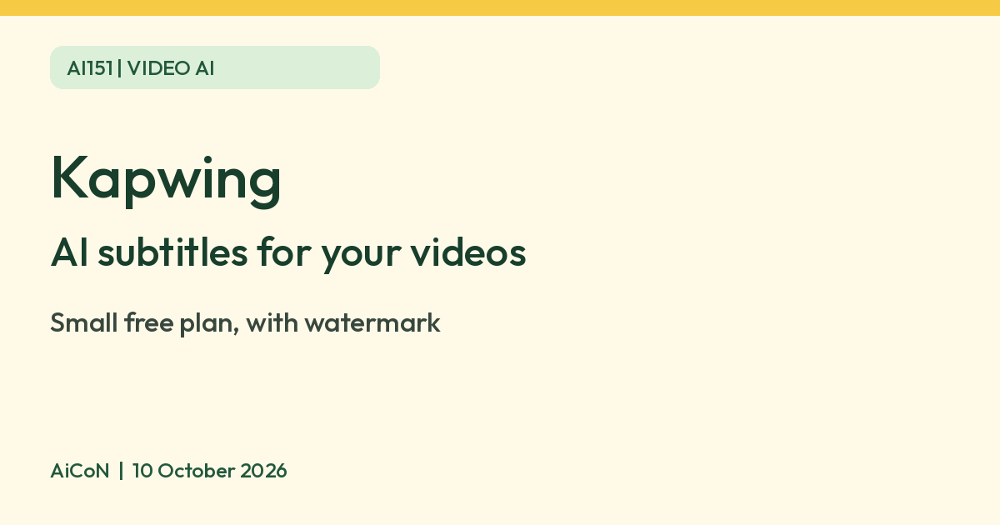

Kapwing: AI subtitles for your videos, with a small free allowance
Kapwing is a browser video editor that writes subtitles for you with AI. Its list includes Malayalam and Hindi. The free plan covers up to 10 minutes of auto-subtitles, and exports carry a watermark.

What it is
Kapwing is an online video editor that runs in the browser. It has an AI auto-subtitle tool: upload a video, and it writes the subtitles for you, then you can edit the text and translate it. Kapwing says it supports 155 language variants for automatic captions. Its list includes Malayalam, Hindi, Tamil, Telugu, Kannada and Marathi.
Is it free
Partly. Kapwing's pricing page shows a Free plan with 10 credits and auto-subtitling for up to 10 minutes of video. Free exports carry a Kapwing watermark and are limited to 4 minutes. Pro is approximately ₹1,550 per member per month when billed annually (US$16), or approximately ₹2,320 billed monthly (US$24). These are conversions using ₹96.79 per US dollar, not verified Indian checkout prices; taxes and card conversion fees may differ. The free allowance is small. The pricing page does not label its 10 credits as a monthly refill, so do not assume they renew monthly.
How to try it
- Open kapwing.com and sign up free.
- Upload a short video and choose Auto subtitles.
- Pick the spoken language, then fix any wrong words in the text.
- Export. On the free plan the video will carry a watermark.
Limits to know
- The free allowance is small. Long videos need a paid plan.
- Exports on the free plan have a watermark and a 4 minute length limit.
- Subtitles can have mistakes, especially with accents, noise and mixed languages. Read them before you post.
- Your video is uploaded to Kapwing. Do not upload private footage you would not share.
- We found no official page on availability in India, and no restriction either. The language list is the only India signal.
- We did not test it ourselves.
Frequently asked questions
Can I get subtitles without paying?
For a short video, yes. Kapwing says free accounts can auto-subtitle up to 10 minutes, with a watermark on exports.
Before you export
Check names, dates, numbers and mixed Malayalam-English speech line by line. Preview the timing and keep text clear of faces and on-screen controls. A 10-minute subtitle allowance does not mean a 10-minute free export: the free export limit is 4 minutes, at 720p with a watermark.
Sources: Kapwing pricing, Kapwing subtitles, Kapwing captions help, Kapwing credits help, USD to INR reference rate. Checked 10 October 2026.